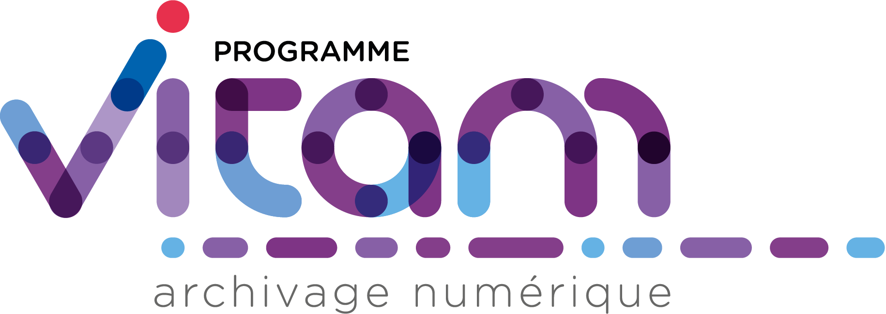

VITAM - Documentation d'installation 
1.4.0
1. Introduction
2. Rappels
3. Prérequis à l’installation
4. Procédures d’installation / mise à jour
5. Procédures de mise à jour
6. Post installation
7. Annexes
VITAM - Documentation d'installation
Docs
»
VITAM - Documentation d’installation
View page source
VITAM - Documentation d’installation
¶
1. Introduction
1.1. Objectif de ce document
2. Rappels
2.1. Information concernant les licences
2.2. Documents de référence
2.3. Glossaire
3. Prérequis à l’installation
3.1. Expertises requises
3.2. Pré-requis plate-forme
3.3. Récupération de la version
4. Procédures d’installation / mise à jour
4.1. Vérifications préalables
4.2. Procédures
5. Procédures de mise à jour
5.1. Reconfiguration
5.2. Migration R6 vers R7
6. Post installation
6.1. Validation du déploiement
6.2. Sauvegarde des éléments d’installation
6.3. Migration R6 vers R7
6.4. Troubleshooting
6.5. Retour d’expérience / cas rencontrés
7. Annexes
7.1. Vue d’ensemble de la gestion des certificats
7.2. Cycle de vie des certificats
7.3. Ansible & ssh